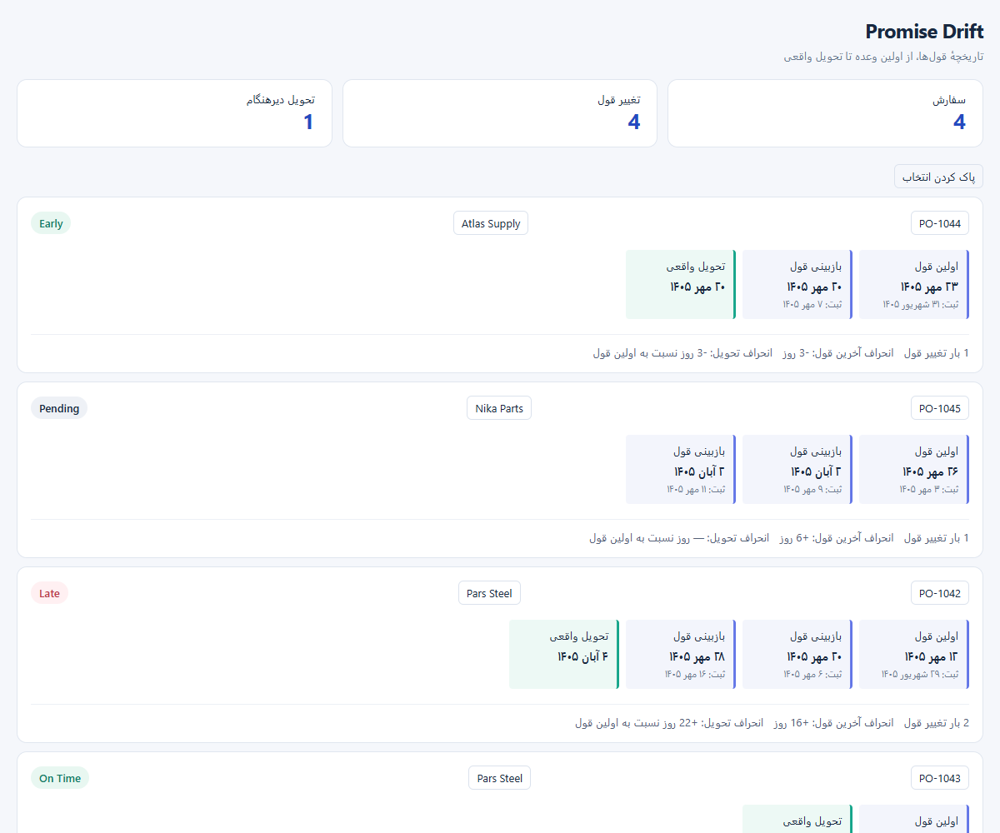

هیچ قولی از تاریخچه حذف نمیشود
تاریخچهٔ هر سفارش
قولها به ترتیب تاریخ ثبت، با تفکیک سفارش و تأمینکننده نمایش داده میشوند.
مبنای اولین قول
انحراف آخرین قول و تحویل واقعی جداگانه با اولین وعده مقایسه میشوند.
تعداد تغییرات واقعی
ثبت مجدد یک تاریخ ثابت، تعداد تغییر قول را افزایش نمیدهد.
وضعیت تحویل
On Time، Late و Early برای سفارش تحویلشده؛ Pending برای سفارش باز.
نمایش شمسی و RTL
تقویم شمسی و راستبهچپ از پنل قالببندی بهصورت مستقل تنظیم میشوند.
انتخاب سفارش و تأمینکننده
با کلیک، ردیفهای مربوط انتخاب میشوند؛ اثر روی سایر نمودارها را در Power BI تنظیم کنید.
پیشنمایش نسخهٔ فعلی

تصویر از اجرای کد بسته در مرورگر با میزبان آزمایشی تهیه شده است؛ نصب داخل Power BI هنوز آزمایش نشده است.
روش استفاده
فایل PBIVIZ را دانلود کنید و در Power BI از گزینهٔ Import a visual from a file وارد کنید.
دادهٔ نمونه را وارد کنید؛ شماره سفارش و تأمینکننده را Text و سه ستون تاریخ را Date قرار دهید.
ستونها را به PO Number، Supplier، Revision Date، Promised Date و Actual Delivery Date متصل کنید. از Date Hierarchy استفاده نکنید.
از پنل قالببندی، نمایش شمسی و RTL را تنظیم کنید. برای انتخاب، روی شماره سفارش یا نام تأمینکننده کلیک کنید.
هر ردیف داده یک ثبت تاریخی از قول است. تاریخ تحویل واقعی اختیاری است. برای حفظ مبنای اولین قول، تاریخچه را با فیلتر گزارش حذف نکنید.